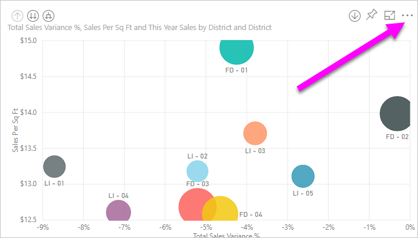
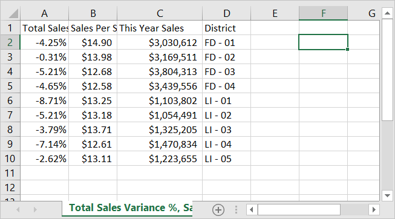

Select More actions (...) from the upper-right (or lower-right) corner of the visualization.

Choose the Export to .csv option.

Power BI exports the data to a .csv file. If you've filtered the visualization, then the .csv export will be filtered as well.
Your browser will prompt you to save the file. Once saved, open the .csv file in Excel.
